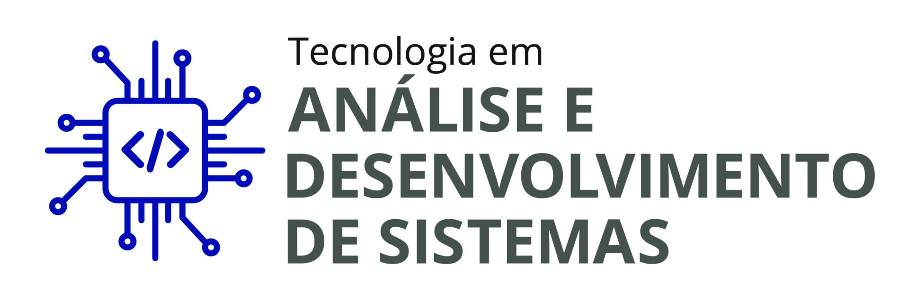

Análise e Desenvolvimento de Sistemas
Centro Universitário FAESA
Atualmente cursando o 4º período.
Previsão de conclusão: 2027.
Estudante de Análise e Desenvolvimento de Sistemas
4º período - Centro Universitário FAESA

Olá! Meu nome é Christopher e sou estudante de Análise e Desenvolvimento de Sistemas no Centro Universitário FAESA. Atualmente estou no 4º período e tenho interesse na área de desenvolvimento de software, especialmente no desenvolvimento Back-End.
Durante minha formação, venho estudando programação, orientação a objetos, desenvolvimento web e banco de dados. Tenho buscado desenvolver projetos práticos para aplicar os conhecimentos adquiridos durante a graduação.
Centro Universitário FAESA
Atualmente cursando o 4º período.
Previsão de conclusão: 2027.
Projeto desenvolvido em Java com o objetivo de auxiliar no gerenciamento de uma barbearia. O sistema permite o cadastro e gerenciamento de clientes, barbeiros, serviços e agendamentos.
Durante o desenvolvimento foram aplicados conceitos de Programação Orientada a Objetos, como encapsulamento, herança e polimorfismo, além da utilização de ArrayList, tratamento de exceções e armazenamento de dados em arquivos CSV.
Tecnologias: Java, Programação Orientada a Objetos e CSV.
Projeto acadêmico voltado para o desenvolvimento de uma plataforma para facilitar a busca e o agendamento de serviços em barbearias. A proposta permite que o usuário encontre estabelecimentos, consulte horários disponíveis e realize agendamentos.
O projeto envolve conhecimentos de desenvolvimento web, banco de dados e análise e desenvolvimento de sistemas.
Tecnologias: HTML, desenvolvimento web e banco de dados.
E-mail: christopher_snc@hotmail.com
GitHub: github.com/Christopher-SNC